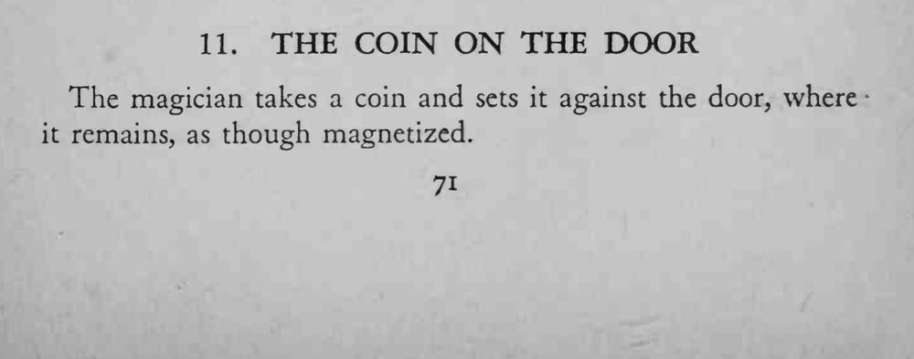
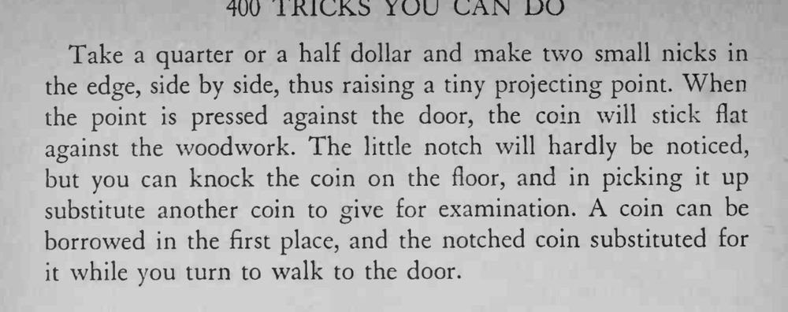

魔术师把硬币往门上一按，松手后硬币竟贴在门上不掉，好像木头有磁性。
凸点要小、按正，别在漆面上划出痕迹。


The magician takes a coin and sets it against the door, where it remains, as though magnetized. Take a quarter or a half dollar and make two small nicks in the edge, side by side, thus raising a tiny projecting point. When the point is pressed against the door, the coin will stick flat against the woodwork. The little notch will hardly be noticed, but you can knock the coin on the floor, and in picking it up substitute another coin to give for examination. coin can be borrowed in the first place, and the notched coin substituted for it while you turn to walk to the door.